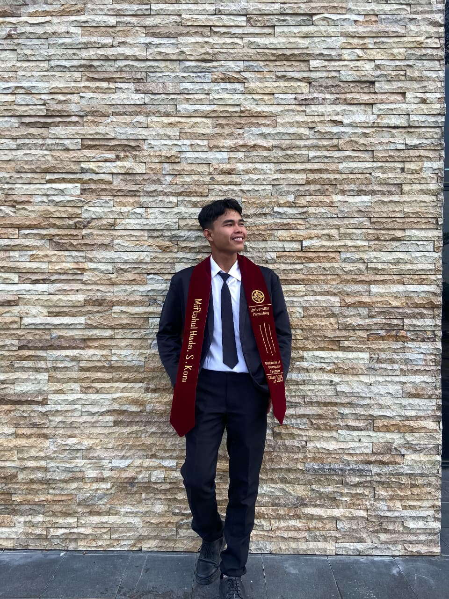

Tamatan Strata I Prodi Sistem Komputer dengan fokus pada otomasi industri, IT Infrastructur dan IoT.
Saya lulus strata I dengan ipk 3.39 pada prodi Sistem Komputer di universitas pamulang yang memiliki minat besar pada pengembangan perangkat IoT, sistem embedded, otomasi industri, dan energi terbarukan. Berpengalaman mengerjakan proyek berbasis ESP32, sensor industri, dan dashboard monitoring real-time. Saya memiliki pengalaman dibidang technical engineering atau pun electrical industri.
Proyek IoT
Sensor Terintegrasi
Platform Utama
Mekatronika
Monitoring tegangan, arus, daya, dan energi menggunakan ESP32 dan PZEM004T berbasis IoT.
Integrasi AI Edge Impulse, sensor warna, ultrasonik, dan Telegram Bot.
Sistem monitoring energi listrik berbasis IoT dengan dashboard real-time.